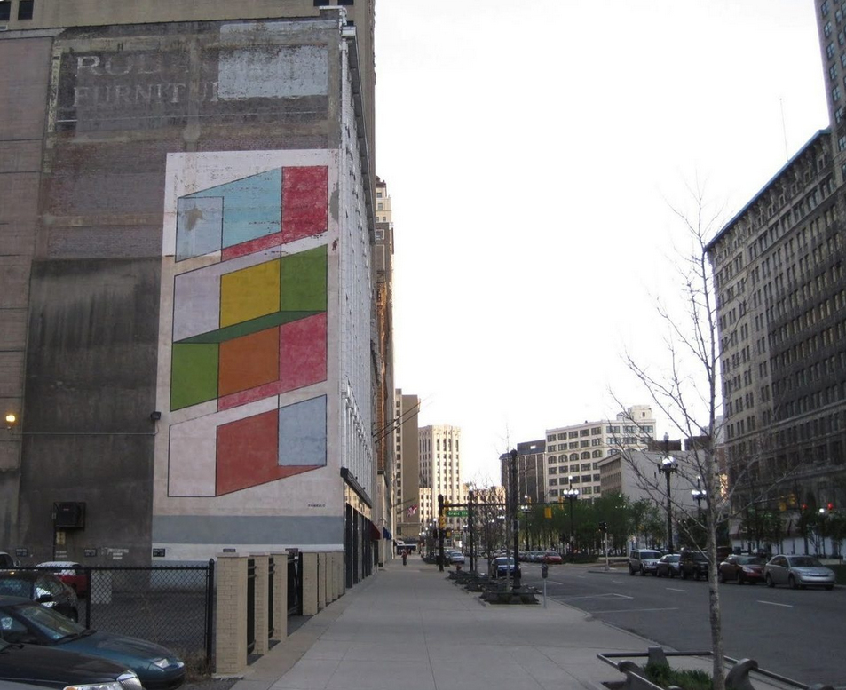

In a section of the city dominated by browns, blacks, and greys, the reds, blues, greens and yellow of Color Cubes surprised, seized, and delighted the eye, even after decades of wear and fading.
Perhaps nothing is more essential to Rubello's art than pure color (though he has made compelling work in black and white). There is a sense of joy and discovery in the boldness and confidence with which he wields and juxtaposes like colors, different colors, and shades of the same color. This is the joy of a passionate educator: Rubello taught color at the College for Creative Studies in the late 1990s, and it would not be incorrect to say that his work teaches its viewers about color.
The German-born American artist Josef Albers, whose work is a parent to Rubello's, writes in 1971 that color, "the most relative medium in art, has innumerable faces or appearances. To study them in their respective interactions, in their interdependence, will enrich our 'seeing,' our world -- and ourselves."1 See REFLECTED.